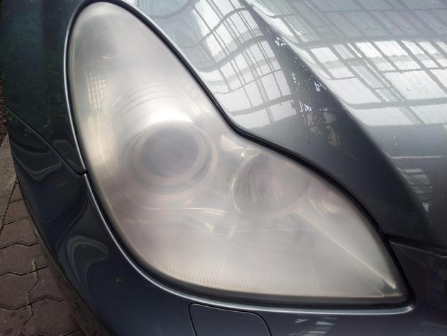
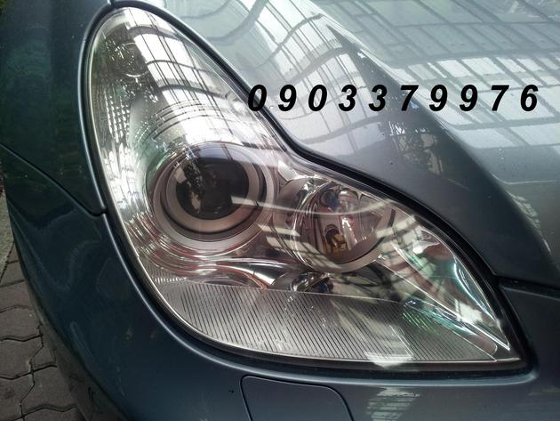
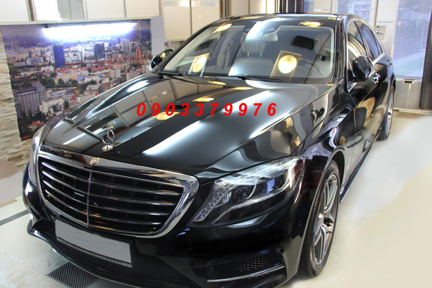
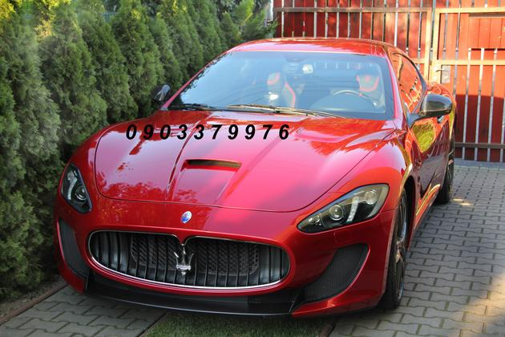
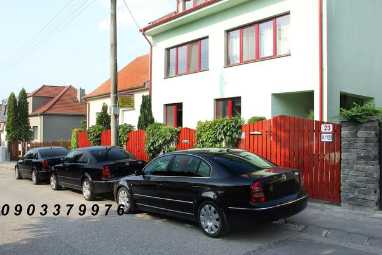
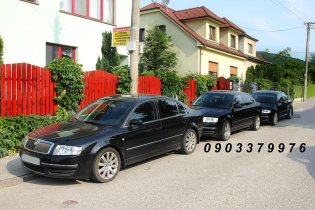
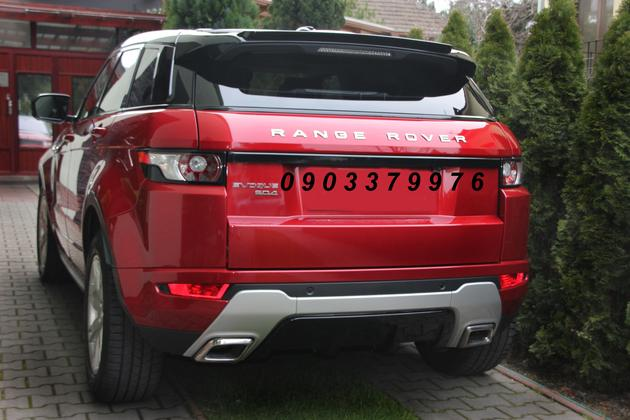

Renovácia svetlometov
Naša špecialita. Zo zožltnutých a matných svetiel späť priezračné — bezpečnejšia jazda v noci bez výmeny za nové.
NajžiadanejšieAutodetailing v Bratislave · od roku 1999
Zožltnuté svetlomety, zmatnený lak, zanedbaný interiér — dáme vaše auto do kondície, akú malo v deň, keď zišlo z linky.


Referencie
Od rodinného kombi po Mercedes S a Maserati. Rovnaká pozornosť k detailu, rovnaká cena bez príplatku za veľkosť.





Služby
Naša špecialita. Zo zožltnutých a matných svetiel späť priezračné — bezpečnejšia jazda v noci bez výmeny za nové.
NajžiadanejšieTrojstupňové leštenie. Z mikroškrabancov a hologramov zrkadlová hĺbka.
Dlhodobá vrstva. Lesk a ochrana pred UV, soľou a vodným kameňom.
Tepovanie čalúnenia, sedadiel, palubnej dosky a batožinového priestoru.
Dezinfekcia interiéru a klimatizácie, odstránenie pachov.
Lokálne opravy škrabancov aj poradenstvo pri kúpe jazdeného auta.
Prečo Roman Sabol
rok, odkedy sa venujem jednej jedinej veci — aby vaše auto vyzeralo perfektne.
Kontakt